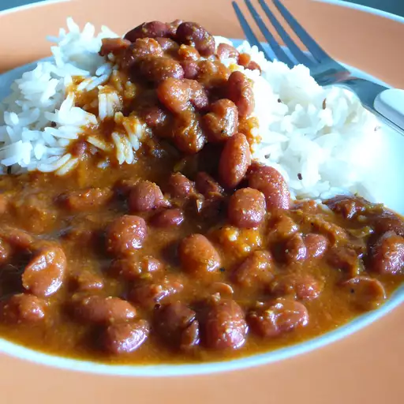

Rajma

Description
Rajma is a dish consisting of red kidney beans n a thick gravy with many Indian whole spices, and is usually served with rice.
It is a lightly spiced, creamy and delicious Punjabi style curry made with protein rich kidney beans, aromatics like onions, ginger, garlic, fragrant spices and tangy tomatoes.
Ingredients
- 1 cup kidney beans
- 2 large onion
- 1 tablespoon garlic
- 1 teaspoon ginger
- 2 chopped green chilli
Steps
- Boil kidney beans
- Chop onion finely and saute them
- Add garlic and ginger and cook for 10 minutes
- Add green chillies and rajma to it
- Add the needed masalas
- Serve hot with rice